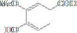
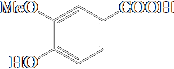
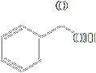
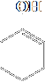
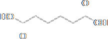

Oxidation of Aldehydes and Ketones
Oxidation of Aldehydes
Aldehydes are oxidized to carboxylic acids by a variety of common oxidizing agents, including chromic acid and molecular oxygen. In fact, aldehydes are one of the most easily oxidized of all functional groups. Oxidation by chromic acid is illustrated by the conversion of hexanal to hexanoic acid (for the mechanism of this oxidation, review Section 10.8A).
| Hexanal | H2CrO4 ⟶ | Hexanoic acid |
Aldehydes are also oxidized to carboxylic acids by Ag(I) ion. One laboratory procedure is to shake a solution of the aldehyde in aqueous ethanol or tetrahydrofuran with a slurry of Ag2O.
| Vanillin | + | Ag2O | THF,H2O ⟶ NaOH | HCl ⟶ H2O | Vanillic acid | + | 2Ag |
Tollens’ reagent, another form of Ag(I), is prepared by dissolving silver nitrate in water, adding sodium hydroxide to precipitate Ag(I) as Ag2O, and then adding aqueous ammonia to redissolve silver(I) as the silver-ammonia complex ion.
| Ag+NO3− | + | 2NH3 | NH3, H2O ⇌ | Ag(NH3)2+NO3− |
When Tollens’ reagent is added to an aldehyde, the aldehyde is oxidized to a carboxylic anion, and Ag(I) is reduced to metallic silver. If this reaction is carried out properly, silver precipitates as a smooth, mirror-like deposit, hence the name silvermirror test. Ag(I) is rarely used at the present time for the oxidation of aldehydes because of the cost of silver and because other, more convenient methods exist for this oxidation. This reaction, however, is still used for silvering glassware, including mirrors. In this process, formaldehyde or glucose (Section 25.1) is generally used as the aldehyde to reduce Ag(I).
Aldehydes are also oxidized to carboxylic acids by molecular oxygen and by hydrogen peroxide.
| Benzaldehyde | + | O2 | ⟶ | 2 | Benzoic acid |
Reaction with oxygen is a radical chain reaction (Section 8.7). Molecular oxygen is the least expensive and most readily available of all oxidizing agents. On an industrial scale, air oxidation of organic compounds, including aldehydes, is very common. Air oxidation of aldehydes can also be a problem. Aldehydes that are liquid at room temperature are so sensitive to oxidation by molecular oxygen that they must be protected from contact with air during storage. Often this is done by sealing the aldehyde in a container under an atmosphere of nitrogen.
Oxidation of Ketones
In contrast to aldehydes, ketones are oxidized only under rather special conditions. For example, they are not normally oxidized by chromic acid or potassium permanganate. In fact, chromic acid is used routinely to oxidize secondary alcohols to ketones in good yield (Section 10.8A).
Ketones undergo oxidative cleavage, via their enol form, when treated with potassium dichromate, potassium permanganate, and other strong oxidants at
higher temperatures and higher concentrations of acid or base. The carbon- carbon double bond of the enol is cleaved to form two carboxyl or ketone groups, depending on the substitution pattern of the original ketone. An important industrial application of this reaction is oxidation by nitric acid of cyclohexanone to hexanedioic (adipic) acid, one of the two monomers required for the synthesis of the polymer nylon 66 (Section 29.5A).
| Cyclohexanone (keto form) | ⇌ | Cyclohexanone (enol form) | Hexanedioic acid (Adipic acid) | + | oxides of nitrogen |